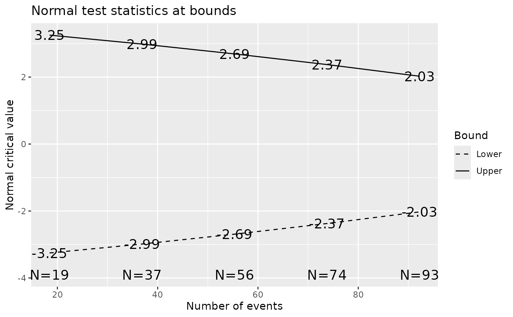
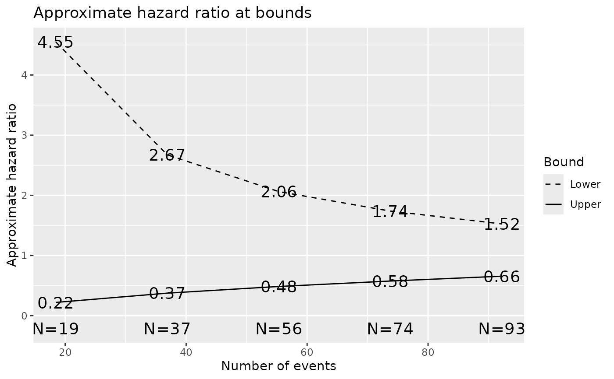

Time-to-event sample size calculation (Lachin-Foulkes)
Source:R/gsMethods.R, R/gsSurvival.R, R/nEvents.R
nSurvival.RdnSurvival() is used to calculate the sample size for a clinical trial
with a time-to-event endpoint. The Lachin and Foulkes (1986) method is used.
nEvents uses the Schoenfeld (1981) approximation to provide sample
size and power in terms of the underlying hazard ratio and the number of
events observed in a survival analysis. The functions hrz2n(),
hrn2z() and zn2hr() also use the Schoenfeld approximation to
provide simple translations between hazard ratios, z-values and the number
of events in an analysis; input variables can be given as vectors.
nSurvival() produces an object of class "nSurvival" with the number
of subjects and events for a set of pre-specified trial parameters, such as
accrual duration and follow-up period. The calculation is based on Lachin
and Foulkes (1986) method and can be used for risk ratio or risk difference.
The function also consider non-uniform (exponential) entry as well as
uniform entry.
If the logical approx is TRUE, the variance under alternative
hypothesis is used to replace the variance under null hypothesis. For
non-uniform entry, a non-zero value of gamma for exponential entry
must be supplied. For positive gamma, the entry distribution is
convex, whereas for negative gamma, the entry distribution is
concave.
nEvents() uses the Schoenfeld (1981) method to approximate the number
of events n (given beta) or the power (given n).
Arguments may be vectors or scalars, but any vectors must have the same
length.
The functions hrz2n, hrn2z and zn2hr also all apply the
Schoenfeld approximation for proportional hazards modeling. This
approximation is based on the asymptotic normal distribtuion of the logrank
statistic as well as related statistics are asymptotically normal. Let
\(\lambda\) denote the underlying hazard ratio (lambda1/lambda2 in
terms of the arguments to nSurvival). Further, let \(n\) denote the
number of events observed when computing the statistic of interest and
\(r\) the ratio of the sample size in an experimental group relative to a
control. The estimated natural logarithm of the hazard ratio from a
proportional hazards ratio is approximately normal with a mean of
\(log{\lambda}\) and variance \((1+r)^2/nr\). Let \(z\) denote a
logrank statistic (or a Wald statistic or score statistic from a
proportional hazards regression model). The same asymptotic theory implies
\(z\) is asymptotically equivalent to a normalized estimate of the hazard
ratio \(\lambda\) and thus \(z\) is asymptotically normal with variance
1 and mean $$\frac{log{\lambda}r}{(1+r)^2}.$$ Plugging the estimated
hazard ratio into the above equation allows approximating any one of the
following based on the other two: the estimate hazard ratio, the number of
events and the z-statistic. That is, $$\hat{\lambda}=
\exp(z(1+r)/\sqrt{rn})$$ $$z=\log(\hat{\lambda})\sqrt{nr}/(1+r)$$ $$n=
(z(1+r)/\log(\hat{\lambda}))^2/r.$$
hrz2n() translates an observed interim hazard ratio and interim
z-value into the number of events required for the Z-value and hazard ratio
to correspond to each other. hrn2z() translates a hazard ratio and
number of events into an approximate corresponding Z-value. zn2hr()
translates a Z-value and number of events into an approximate corresponding
hazard ratio. Each of these functions has a default assumption of an
underlying hazard ratio of 1 which can be changed using the argument
hr0. hrn2z() and zn2hr() also have an argument
hr1 which is only used to compute the sign of the computed Z-value in
the case of hrn2z() and whether or not a z-value > 0 corresponds to a
hazard ratio > or < the null hazard ratio hr0.
Usage
# S3 method for class 'nSurvival'
print(x, ...)
nSurvival(
lambda1 = 1/12,
lambda2 = 1/24,
Ts = 24,
Tr = 12,
eta = 0,
ratio = 1,
alpha = 0.025,
beta = 0.1,
sided = 1,
approx = FALSE,
type = c("rr", "rd"),
entry = c("unif", "expo"),
gamma = NA
)
nEvents(
hr = 0.6,
alpha = 0.025,
beta = 0.1,
ratio = 1,
sided = 1,
hr0 = 1,
n = 0,
tbl = FALSE
)
zn2hr(z, n, ratio = 1, hr0 = 1, hr1 = 0.7)
hrn2z(hr, n, ratio = 1, hr0 = 1, hr1 = 0.7)
hrz2n(hr, z, ratio = 1, hr0 = 1)Arguments
- x
An object of class "nSurvival" returned by
nSurvival()(optional: used for output; "months" or "years" would be the 'usual' choices).- ...
Allows additional arguments for
print.nSurvival().- lambda1, lambda2
event hazard rate for placebo and treatment group respectively.
- Ts
maximum study duration.
- Tr
accrual (recruitment) duration.
- eta
equal dropout hazard rate for both groups.
- ratio
randomization ratio between placebo and treatment group. Default is balanced design, i.e., randomization ratio is 1.
- alpha
type I error rate. Default is 0.025 since 1-sided testing is default.
- beta
type II error rate. Default is 0.10 (90% power). Not needed for
nEvents()if n is provided.- sided
one or two-sided test? Default is one-sided test.
- approx
logical. If
TRUE, the approximation sample size formula for risk difference is used.- type
type of sample size calculation: risk ratio (“rr”) or risk difference (“rd”).
- entry
patient entry type: uniform entry (
"unif") or exponential entry ("expo").- gamma
rate parameter for exponential entry.
NAif entry type is"unif"(uniform). A non-zero value is supplied if entry type is"expo"(exponential).- hr
Hazard ratio. For
nEvents, this is the hazard ratio under the alternative hypothesis (>0).- hr0
Hazard ratio under the null hypothesis (>0, for
nEvents,!= hr).- n
Number of events. For
nEventsmay be input to compute power rather than sample size.- tbl
Indicator of whether or not scalar (vector) or tabular output is desired for
nEvents().- z
A z-statistic.
- hr1
Hazard ratio under the alternate hypothesis for
hrn2z, zn2hr(>0,!= hr0)
Value
nSurvival produces a list with the following component
returned:
- type
As input.
- entry
As input.
- n
Sample size required (computed).
- nEvents
Number of events required (computed).
- lambda1
As input.
- lambda2
As input.
- eta
As input.
- ratio
As input.
- gamma
As input.
- alpha
As input.
- beta
As input.
- sided
As input.
- Ts
As input.
- Tr
As input.
nEvents produces a scalar or vector of sample sizes (or powers) when
tbl=FALSE or, when tbl=TRUE a data frame of values with the
following columns:
- hr
As input.
- n
If
n[1]=0on input (default), output contains the number of events need to obtain the input Type I and II error. Ifn[1]>0on input, the input value is returned.- alpha
As input.
- beta
If
n[1]=0on input (default),betais output as input. Otherwise, this is the computed Type II error based on the inputn.- Power
One minus the output
beta. Whentbl=FALSE, n[1]>0, this is the value or vector of values returned.- delta
Standardized effect size represented by input difference between null and alternative hypothesis hazard ratios.
- ratio
Ratio of experimental to control sample size where 'experimental' is the same as the group with hazard represented in the numerator of the hazard ratio.
- se
Estimated standard error for the observed log(hazard ratio) with the given sample size.
hrz2n outputs a number of events required to approximately have the
input hazard ratio, z-statistic and sample size correspond. hrn2z
outputs an approximate z-statistic corresponding to an input hazard ratio
and number of events. zn2hr outputs an approximate hazard ratio
corresponding to an input z-statistic and number of events.
References
Lachin JM and Foulkes MA (1986), Evaluation of Sample Size and Power for Analyses of Survival with Allowance for Nonuniform Patient Entry, Losses to Follow-Up, Noncompliance, and Stratification. Biometrics, 42, 507-519.
Schoenfeld D (1981), The Asymptotic Properties of Nonparametric Tests for Comparing Survival Distributions. Biometrika, 68, 316-319.
Author
Shanhong Guan shanhong.guan@gmail.com, Keaven Anderson keaven_anderson@merck.com
Examples
library(ggplot2)
# consider a trial with
# 2 year maximum follow-up
# 6 month uniform enrollment
# Treatment/placebo hazards = 0.1/0.2 per 1 person-year
# drop out hazard 0.1 per 1 person-year
# alpha = 0.025 (1-sided)
# power = 0.9 (default beta=.1)
ss <- nSurvival(
lambda1 = .2, lambda2 = .1, eta = .1, Ts = 2, Tr = .5,
sided = 1, alpha = .025
)
# group sequential translation with default bounds
# note that delta1 is log hazard ratio; used later in gsBoundSummary summary
x <- gsDesign(
k = 5, test.type = 2, n.fix = ss$nEvents, nFixSurv = ss$n,
delta1 = log(ss$lambda2 / ss$lambda1)
)
# boundary plot
plot(x)

# effect size plot
plot(x, plottype = "hr")

# total sample size
x$nSurv
#> [1] 440
# number of events at analyses
x$n.I
#> [1] 18.44213 36.88425 55.32638 73.76850 92.21063
# print the design
x
#> Group sequential design sample size for time-to-event outcome
#> with sample size 440. The analysis plan below shows events
#> at each analysis.
#> Symmetric two-sided group sequential design with
#> 90 % power and 2.5 % Type I Error.
#> Spending computations assume trial stops
#> if a bound is crossed.
#>
#>
#> Analysis N Z Nominal p Spend
#> 1 19 3.25 0.0006 0.0006
#> 2 37 2.99 0.0014 0.0013
#> 3 56 2.69 0.0036 0.0028
#> 4 74 2.37 0.0088 0.0063
#> 5 93 2.03 0.0214 0.0140
#> Total 0.0250
#>
#> ++ alpha spending:
#> Hwang-Shih-DeCani spending function with gamma = -4.
#>
#> Boundary crossing probabilities and expected sample size
#> assume any cross stops the trial
#>
#> Upper boundary (power or Type I Error)
#> Analysis
#> Theta 1 2 3 4 5 Total E{N}
#> 0.0000 0.0006 0.0013 0.0028 0.0063 0.0140 0.025 91.5
#> 0.3415 0.0370 0.1512 0.2647 0.2699 0.1771 0.900 66.4
#>
#> Lower boundary (futility or Type II Error)
#> Analysis
#> Theta 1 2 3 4 5 Total
#> 0.0000 6e-04 0.0013 0.0028 0.0063 0.014 0.025
#> 0.3415 0e+00 0.0000 0.0000 0.0000 0.000 0.000
# overall design summary
cat(summary(x))
#> Symmetric two-sided group sequential design with 5 analyses, time-to-event outcome with sample size 440 and 93 events required, 90 percent power, 2.5 percent (1-sided) Type I error. Bounds derived using a Hwang-Shih-DeCani spending function with gamma = -4.
# tabular summary of bounds
gsBoundSummary(x, deltaname = "HR", Nname = "Events", logdelta = TRUE)
#> Analysis Value Efficacy Futility
#> IA 1: 20% Z 3.2527 -3.2527
#> Events: 19 p (1-sided) 0.0006 0.0006
#> ~HR at bound 0.2198 4.5487
#> P(Cross) if HR=1 0.0006 0.0006
#> P(Cross) if HR=0.5 0.0370 0.0000
#> IA 2: 40% Z 2.9860 -2.9860
#> Events: 37 p (1-sided) 0.0014 0.0014
#> ~HR at bound 0.3741 2.6734
#> P(Cross) if HR=1 0.0018 0.0018
#> P(Cross) if HR=0.5 0.1883 0.0000
#> IA 3: 60% Z 2.6917 -2.6917
#> Events: 56 p (1-sided) 0.0036 0.0036
#> ~HR at bound 0.4849 2.0621
#> P(Cross) if HR=1 0.0047 0.0047
#> P(Cross) if HR=0.5 0.4530 0.0000
#> IA 4: 80% Z 2.3737 -2.3737
#> Events: 74 p (1-sided) 0.0088 0.0088
#> ~HR at bound 0.5754 1.7380
#> P(Cross) if HR=1 0.0110 0.0110
#> P(Cross) if HR=0.5 0.7229 0.0000
#> Final Z 2.0253 -2.0253
#> Events: 93 p (1-sided) 0.0214 0.0214
#> ~HR at bound 0.6558 1.5247
#> P(Cross) if HR=1 0.0250 0.0250
#> P(Cross) if HR=0.5 0.9000 0.0000
# approximate number of events required using Schoenfeld's method
# for 2 different hazard ratios
nEvents(hr = c(.5, .6), tbl = TRUE)
#> hr n alpha sided beta Power delta ratio hr0 se
#> 1 0.5 88 0.025 1 0.1 0.9 0.3465736 1 1 0.2132007
#> 2 0.6 162 0.025 1 0.1 0.9 0.2554128 1 1 0.1571348
# vector output
nEvents(hr = c(.5, .6))
#> [1] 87.4793 161.0686
# approximate power using Schoenfeld's method
# given 2 sample sizes and hr=.6
nEvents(hr = .6, n = c(50, 100), tbl = TRUE)
#> hr n alpha sided beta Power delta ratio hr0 se
#> 1 0.6 50 0.025 1 0.5611646 0.4388354 0.2554128 1 1 0.2828427
#> 2 0.6 100 0.025 1 0.2762012 0.7237988 0.2554128 1 1 0.2000000
# vector output
nEvents(hr = .6, n = c(50, 100))
#> [1] 0.4388354 0.7237988
# approximate hazard ratio corresponding to 100 events and z-statistic of 2
zn2hr(n = 100, z = 2)
#> [1] 0.67032
# same when hr0 is 1.1
zn2hr(n = 100, z = 2, hr0 = 1.1)
#> [1] 0.7373521
# same when hr0 is .9 and hr1 is greater than hr0
zn2hr(n = 100, z = 2, hr0 = .9, hr1 = 1)
#> [1] 1.342642
# approximate number of events corresponding to z-statistic of 2 and
# estimated hazard ratio of .5 (or 2)
hrz2n(hr = .5, z = 2)
#> [1] 33.3019
hrz2n(hr = 2, z = 2)
#> [1] 33.3019
# approximate z statistic corresponding to 75 events
# and estimated hazard ratio of .6 (or 1/.6)
# assuming 2-to-1 randomization of experimental to control
hrn2z(hr = .6, n = 75, ratio = 2)
#> [1] -2.085437
hrn2z(hr = 1 / .6, n = 75, ratio = 2)
#> [1] 2.085437